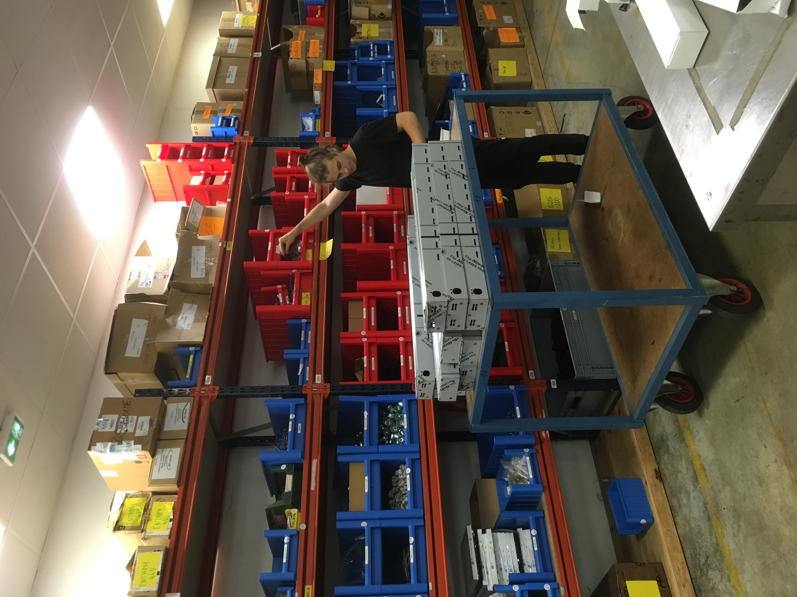
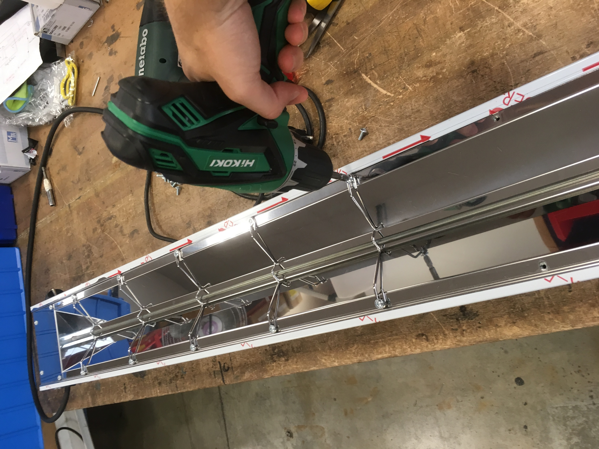

Préparation du kit
Kit preparation
Rassembler les pièces, préparer les références et comprendre la logique matérielle avant le montage.
Gather parts, prepare references, and understand the hardware logic before assembly.
Sofraca · Furnotel
Du 28 juin au 23 juillet 2021, première immersion concrète en atelier chez Sofraca, fabricant français de matériel pour la restauration professionnelle.
From June 28 to July 23, 2021, first hands-on workshop immersion at Sofraca, a French manufacturer of equipment for professional catering.
01
Sofraca fait partie du groupe Furnotel. Le support de stage présentait une structure d’environ 16 employés pour Sofraca et 116 pour le groupe, avec un chiffre d’affaires 2019 de 5,3 M€ pour Sofraca et 63 M€ pour Furnotel.
Sofraca is part of the Furnotel group. The internship support presented a structure of about 16 employees for Sofraca and 116 for the group, with 2019 revenue of EUR 5.3M for Sofraca and EUR 63M for Furnotel.
Pour moi, l’enjeu n’était pas seulement technique : il s’agissait de voir de près comment un atelier français organise sa production et pourquoi certaines étapes ne sont pas facilement délocalisables.
For me, the point was not only technical: it was about seeing up close how a French workshop organizes production and why some steps are not easily outsourced.
02
Rassembler les pièces, préparer les références et comprendre la logique matérielle avant le montage.
Gather parts, prepare references, and understand the hardware logic before assembly.
Passer par des gestes simples mais exigeants, où la précision et la répétabilité comptent autant que la vitesse.
Go through simple but demanding gestures where precision and repeatability matter as much as speed.
Voir l’appareil jusqu’au bout : validation, contrôle puis préparation à l’expédition.
Follow the device to the end: validation, checks, then preparation for shipping.
03



04
Le support insiste sur des relations horizontales simples, beaucoup de confiance dans le travail réalisé et peu de gêne à poser des questions. Ce premier stage m’a surtout appris à regarder autrement le travail manuel et la chaîne réelle de fabrication.
The support emphasizes horizontal relationships, trust in the work being done, and very little hesitation to ask questions. More than anything, this first internship taught me to look differently at manual work and real manufacturing flows.
J’y ai découvert un travail concret, qui a du sens, et toutes les étapes par lesquelles un produit passe avant d’arriver chez le client.
I discovered concrete work that makes sense, and all the steps a product goes through before reaching the customer.